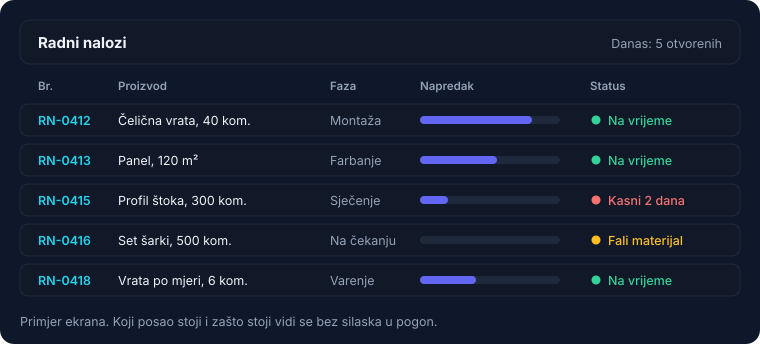
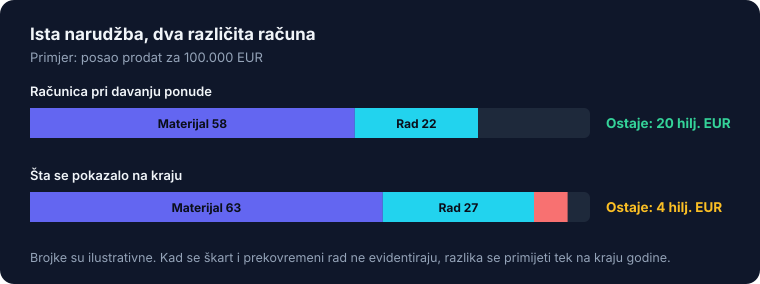

Kada softver za upravljanje proizvodnjom postaje neophodan?
Većina proizvodnih preduzeća počinje sa Excelom, papirnim radnim nalogom i jednom WhatsApp grupom. Dok ima pet-deset narudžbi, tom načinu rada nema zamjerke; svi znaju gdje je šta. Kad broj narudžbi dođe do trideset-četrdeset, isti način svakog dana odnese pomalo novca, a taj gubitak vam niko ne sabere i ne stavi pred vas.

Poznati prizori iz pogona
U proizvodnim pogonima koje obilazimo stalno vidimo iste prizore. Kupac zove i pita za svoju narudžbu, kolega iz prodaje kaže „da pogledam pa vam javim” i silazi u pogon. Šarke za vrata koja se otpremaju u četvrtak nestale su u utorak, a niko nije primijetio. Djelovi pogrešno isječeni odloženi su u ugao, ali nigdje nije zapisano koliko ih je.
I plan obično zna samo jedan čovjek, najčešće rukovodilac proizvodnje ili najstariji majstor. Kad on ode na nedjelju dana odmora, posao ide, ali sporije, jer nema nikog drugog ko bi odlučio koji posao ide prvi.
Tu je i pitanje cijene. Kad pitate „koliko zarađujemo na ovim vratima?”, u većini preduzeća odgovor je prošlogodišnja cijena uvećana za poskupljenje. Podaci potrebni da se izračuna stvarni trošak — koliko je sati rada otišlo i koliko je materijala bačeno — nikada nijesu prikupljeni.
Ko plaća taj račun?
Nijedan od ovih problema sam ne dovodi preduzeće u nevolju. Gubitak se gomila kad se dešavaju svi zajedno.
Isporuka koja kasni
Za narudžbu koja ode kasno nekad platite penale, nekad date popust. Veći gubitak dolazi kasnije: kupac sljedeći posao da drugoj firmi, koja drži obećani rok, i to vam ne kaže.
Novac koji leži u magacinu
Kad se ne zna kog materijala, kada i koliko će trebati, nabavlja se po osjećaju. Na kraju u magacinu stoji lim za šest mjeseci, a nema vijaka potrebnih za sjutrašnji posao. Linija stane, a vijci se kupe bez pregovaranja u prvoj gvožđari u gradu.
Škart koji niko ne zapiše
Ako se dio koji ode u otpad ne evidentira, ne možete znati na kojoj mašini ili u kojoj smjeni je problem. Na kraju mjeseca vidite da materijala fali, a ne možete naći zašto.
Sve se pita vas
Pošto podaci nijesu u sistemu, i najmanja odluka dolazi do vlasnika ili direktora. Preduzeće raste onoliko koliko to jedno ili dvoje ljudi mogu da stignu u jednom danu.
Čemu ovdje služi softver?
Ono što zovemo softverom za upravljanje proizvodnjom jeste evidencija koja navedene podatke skuplja na jedno mjesto. Naziv i ekran se razlikuju, ali posao koji radi manje-više je isti.
Kad se narudžba potvrdi, sistem je pretvara u radni nalog. U radnom nalogu piše koliko kog materijala ide, kroz koje operacije i kojim redom prolazi i kada se isporučuje. Taj podatak se unosi jednom i poslije se ne prepisuje na papir ili u poruku.
Kad operater počinje i završava posao, sa tableta ili čitača barkoda upiše se zapis. Koliko je komada izašlo, koliko je bilo neispravnih, zašto je mašina stala — sve to ulazi u sistem u tom trenutku. Nema potrebe da neko uveče skuplja obrasce i prekucava ih u Excel.

Pošto su otvoreni radni nalozi poznati, potreba za materijalom izlazi sama. Sistem nedjelju dana unaprijed pokaže da će šarke nestati u utorak, pa nabavka prema tome naručuje.
Kod planiranja se na jednom ekranu vidi koja je mašina i koja ekipa kog dana zauzeta. Kad stigne nova narudžba, rok isporuke dajete gledajući taj ekran.
Na kraju, trošak. Pošto se utrošeni materijal, utrošeno vrijeme i škart knjiže na radni nalog, vidite koliko vas je koštala svaka narudžba. Primjer ispod može izgledati pretjeran, ali u preduzećima u kojima se škart i prekovremeni rad uopšte ne evidentiraju razlike jesu tolike.

„Naš posao je drugačiji, ne staje u softver”
Ovo čujemo skoro na svakom razgovoru i primjedba nije neosnovana. U preduzeću koje proizvodi po narudžbi svaki posao je drugačiji. U serijskoj proizvodnji glavna briga je brzina. U radionici koja radi uslužno materijal je kupčev i zalihe se vode sasvim drugačije. Kad uzmete gotov paket i postavite ga bez ikakvih izmjena, zbog tih razlika sistem postane neupotrebljiv.
Zato mi ne počinjemo od softvera. Prvo utvrdimo kako u preduzeću teče jedna narudžba, pa sistem postavimo prema tom toku. Ako zaposleni moraju da mijenjaju način rada samo zato što softver tako traži, nešto je u uvođenju pošlo naopako.
Kada Excel prestaje da bude dovoljan?
Radionici od tri čovjeka softver za proizvodnju ne treba od prvog dana. Koliko smo vidjeli, Excel više ne može da nosi posao kad nastupi nešto od sljedećeg:
- Ako je broj poslova koji teku istovremeno veći nego što jedna osoba može da drži u glavi.
- Ako proizvod prolazi kroz više faza i čeka između njih.
- Ako ne znate koliko je narudžbi prošlog mjeseca otišlo kasno.
- Ako posao nekoliko puta mjesečno stane jer nedostaje materijal.
- Ako se razmišlja o drugoj smjeni, drugom pogonu ili novoj grupi proizvoda.
Koji softver?
Izbor je velik: postoje sveobuhvatni ERP sistemi, MES rješenja koja gledaju samo proizvodni pogon, paketi za pojedine djelatnosti i aplikacije pisane po mjeri preduzeća. Šta odgovara zavisi od veličine preduzeća i od toga šta proizvodi.
Mi ne pokušavamo da prodamo određeni proizvod. U nekim preduzećima smo uveli prilagođen ERP, u nekima napisali jednostavnu aplikaciju po mjeri pogona. Naše iskustvo govori ovo: skup sistem koji preduzeću ne odgovara koristi manje nego jeftin sistem koji je dobro postavljen.
Odakle početi?
Za početak ispratite jednu narudžbu od početka do kraja. Gdje je napisana ponuda, kako je narudžba prenesena u pogon, kako je tražen materijal, kako je javljeno za otpremu? Zabilježite svako mjesto na kojem podatak pređe na papir, u poruku ili u nečije pamćenje. U većini preduzeća taj spisak ispuni cijelu stranu.
Zatim sa spiska izaberite jednu stavku koja vas najviše boli. Obično je to praćenje radnih naloga ili potreba za materijalom. Projekti koji pokušaju da poprave sve odjednom ostaju nedovršeni.
Izabranu temu prvo isprobajte na jednoj liniji ili jednoj grupi proizvoda. Kad tim počne da vjeruje sistemu, redom dodajete planiranje, troškove i kvalitet.
Česta pitanja
Treba li i maloj radionici?
I u radionici od pet ljudi korisno je urediti praćenje narudžbi i materijala. Za tu veličinu ne treba veliki sistem; dovoljan je jednostavan red postavljen prema poslu.
Hoće li ga koristiti majstori i operateri?
Hoće, ako je ekran jednostavan. Od operatera se najčešće traže dva dodira: započni posao, završi posao. U sistemima koji se ne koriste obično je čovjeku u pogonu dodat posao, a zauzvrat mu nije dato ništa što mu rad olakšava.
Koliko traje uvođenje?
Zavisi od obima. Puštanje u rad samo praćenja radnih naloga traje nekoliko nedjelja. Sistem koji obuhvata i planiranje, troškove i kvalitet traži nekoliko mjeseci. Mi radije idemo fazu po fazu, da se prva korist vidi rano.
Radi li sa našim postojećim računovodstvenim programom?
U većini slučajeva radi. Sistem za proizvodnju može se postaviti tako da podatke prenosi u računovodstveni program koji koristite. Ne morate ga mijenjati.
Povezane usluge: ERP i praćenje proizvodnje za proizvodna preduzeća, ERP rješenja za mala i srednja preduzeća, studija slučaja: praćenje proizvodnje montažnih elemenata.
Koliki dio kapaciteta koriste vaše mašine?
Iz planiranog vremena, zastoja i broja proizvedenih komada izračunajte OEE i odakle dolazi najveći gubitak.
Otvori kalkulatorŠablon za plan proizvodnje i kapacitet
Dnevni kapacitet po mašini, datum završetka narudžbi i poslovi koji će probiti rok. Besplatan Excel šablon.
Pogledaj šablonePogledajmo zajedno vašu proizvodnju
Ispratimo zajedno put jedne vaše narudžbe i vidimo gdje zapinje.
Razgovarajmo o vašem projektu